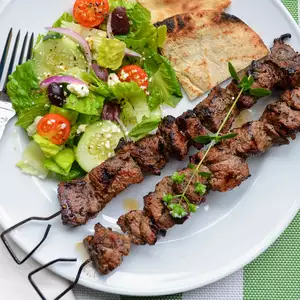

This lamb souvlaki recipe features marinated pieces of lamb, threaded on skewers, and char-grilled to perfection. I like to serve these with rosemary garlic roasted potatoes, a Greek salad, and pita bread.
Whisk olive oil, lemon juice, red wine vinegar, oregano, garlic, salt, and pepper together in a medium bowl. Add cubed lamb and stir until lamb is coated with marinade. Cover and refrigerate 3 hours, or overnight.
Preheat an outdoor grill for medium-high heat and lightly oil the grate.
Thread marinated lamb onto skewers, reserving any remaining marinade. Grill skewers until desired doneness, 10 to 12 minutes, basting with the reserved marinade and turning occasionally for even cooking.